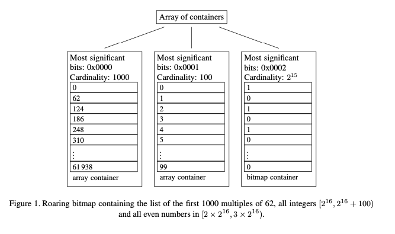
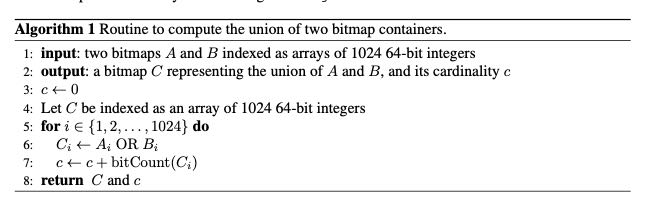

Better bitmap performance with Roaring bitmaps
这篇文章对标的两个实现是：WAH以及CONCISE. 两者的实现思路都差不多，都是将n个bits进行压缩，压缩单元为word(假设w个bits). WAH实现方式是，一个word里面只使用w-1bits, msb用来标记这个word属性：0 的话就表示literal word, 1的话下一个bit表示具体值，剩下的(w-2)bits表示长度，类似RLE的方法。CONCISE在这个基础上做了点改进，就是允许增加一个flip word，以便更好应对偶然的flip bit情况。
Most of the recently proposed compressed bitmap formats are derived from Oracle’s BBC [2] and use run-length encoding (RLE) for compression: WAH [3], Concise [1], EWAH [4], COMPAX [5], VLC [6], VAL-WAH [7], etc. Wu et al.’s WAH is probably the best known. WAH divides a bitmap of n bits into n/w-1 words of w−1 bits, where w is a convenient word length (e.g., w=32). w−1 WAH distinguishes between two types of words: words made of just w − 1 ones (11· · · 1) or just w − 1 zeros (00· · · 0), are fill words, whereas words containing a mix of zeros and ones (e.g., 101110· · · 1) are literal words. Literal words are stored using w bits: the most significant bit is set to zero and the remaining bits store the heterogeneous w − 1 bits. Sequences of homogeneous fill words (all ones or all zeros) are also stored using w bits: the most significant bit is set to 1, the second most significant bit indicates the bit value of the homogeneous word sequence, while the remaining w − 2 bits store the run length of the homogeneous word sequence.
When compressing a sparse bitmap, e.g., corresponding to the set {0, 2(w − 1), 4(w − 1), . . .}, WAH can use 2w bits per set bit. Concise reduces this memory usage by half [1]. It uses a similar format except for coded fill words. Instead of storing the run length r using w − 2 bits, Concise uses only w − 2 − ⌈log2(w)⌉ bits, setting aside ⌈log2(w)⌉ bits as position bits. These ⌈log2(w)⌉ position bits encode a number p ∈ [0, w). When p = 0, we decode r + 1 fill words. When it is non-zero, we decode r fill words preceded by a word that has its (p − 1)th bit flipped compared to the following fill words. Consider the case where w = 32. Concise can code the set {0, 62, 124, . . .} using only 32 bits/integer, in contrast to WAH which requires 64 bits/integer.
但是这种结构对于范围比较大的bitmap效果不好，另外就是存取性能也不好。roraing bitmap就是针对这个问题进行优化的。roraing bitmap是针对32bit设计的bitmap. 其实说来这个实现也比较简单，就是一个二级的数据结构：第一层是一个arry用来索引high 16bit, 第二层则是array or bitmap用来索引low 16bit. 至于第二层是array还是bitmap，文章里面建议使用4096来区分：<=4096使用array(2^12 * 16bits = 64Kbits), >4096使用bitmap(2^16 bits = 64Kbits). 所以最大一个container就是64K bits. 基本上我们都是使用16bit来表示一个integer，不过如果基数太少的话，那么最好还是使用其他数据结构比如set. 文章建议，如果基数比例 < 0.1%的话，那么就不要使用这个数据结构。 另外就是bitmap里面可以记录1，但是如果里面1太多的话，是不是可以变为记录0的arrya呢？

了解了数据结构，在上面的算法就比较清楚了。一个很重要的优化是，里面维护了container的cardinality. 实际显示维护这个cardinality，开销大约是30%（我怀疑可以做到更少），但是会让其他代码效率更高。下面是两个bitmap union的情况，bitcount则可以用比较高效的popcount实现。

将array变为bitmap的过程中，需要将value里面的bit筛选出来，这个代码如下：
void foo(int x) { while (x) { int t = x & -x; // 只留下最低1位的1 printf("%d\n", __builtin_popcount(t-1)); x = x & (x-1); // 清楚最低1位的1 } } void bar(int x) { while (x) { printf("%d\n", __builtin_ctz(x)); x = x & (x-1); } }
array和array做intersect的话，那么结果肯定是array. 至于这个merge, 论文里面提到了一个优化，就是如果两个card(size)差距比较大的话(>64)，可以认为交集比较少，那么可以使用galloping intersections方法来减少比较。这个方法我不清楚，后面可以看看论文。array和array做union的话，如果card之和<4096的话，那么就使用merge. 否则先变为bitmap. 如果bitmap发现card < 4096，在变回为array. 所以这里可以看到维护card的重要性：某些情况我们可以快速判断结果是array还是bitmap.